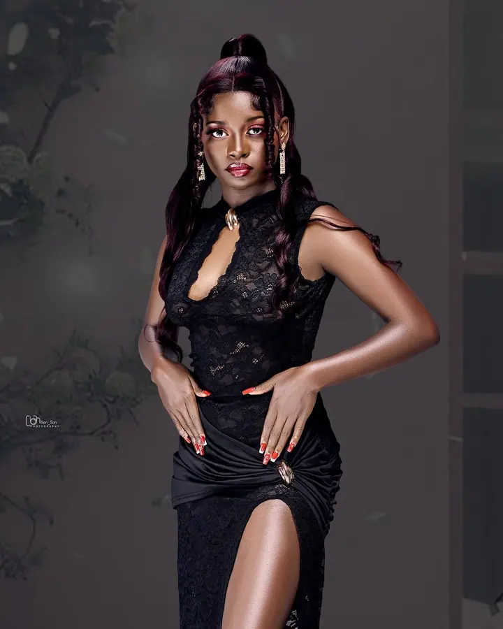
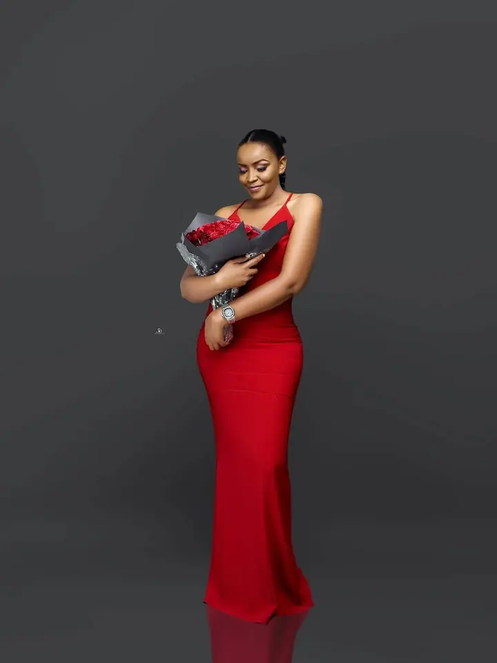

Portréty v ateliéru i venku
Fotím portréty v ateliéru i venku, od klidných snímků po módní a modelingové focení. Pomůžu vám s pózováním, abyste na fotkách vypadali přirozeně a sebevědomě.

Portrétní a svatební fotograf
Jmenuji se Benson a pod značkou Morani Images fotím portréty v ateliéru i venku. Fotím také zásnuby a svatby a s naším týmem točíme video pro klienty v Nanyuki a okolí.
Zeptat se na termín
Fotím portréty v ateliéru i venku, od klidných snímků po módní a modelingové focení. Pomůžu vám s pózováním, abyste na fotkách vypadali přirozeně a sebevědomě.
Jmenuji se Benson a v Nanyuki provozuji Morani Images, známé také jako Benson Photography Kenya. Fotím portréty v ateliéru i venku, svatby, zásnuby a akce. S naším týmem nabízíme také video, grafiku a plánování svateb.
Nejvíc nás inspiruje krása přírody a kouzlo všedních dní. Rádi bereme obyčejné chvíle a děláme z nich vzpomínky, ke kterým se budete vracet. Chceme, aby kvalitní fotky a video byly cenově dostupné a aby celá spolupráce byla rychlá a bez starostí.
Na prvním místě je pro mě Bůh, pak práce, kterou mám rád. Ať chcete oslavit důležitý milník, vyprávět svůj příběh, nebo ukázat světu svou vizi, rád vám s tím pomůžu.
Napište nebo zavolejte a řekněte mi, jaké focení si představujete a kdy by se vám hodilo.
Společně vybereme, jestli budeme fotit v ateliéru nebo venku, a probereme oblečení, styl a případně video.
Při focení vás povedu pózami i výrazem, abyste se cítili uvolněně a na fotkách vypadali sami sebou.
Vybrané snímky pečlivě upravím a pošlu vám je ve finální podobě.
Ne, fotím v ateliéru i venku. Místo vybereme podle toho, jakou atmosféru chcete na fotkách mít.
Ano, fotím zásnuby, klasické i tradiční svatby. Rádi vám pomůžeme i s plánováním svatebního dne.
Ano, video produkce patří k našim službám. Fotky i video tak můžete mít od jednoho týmu.
Fotky z akcí a oslav sdílím na samostatném profilu @benson_photogram_events.